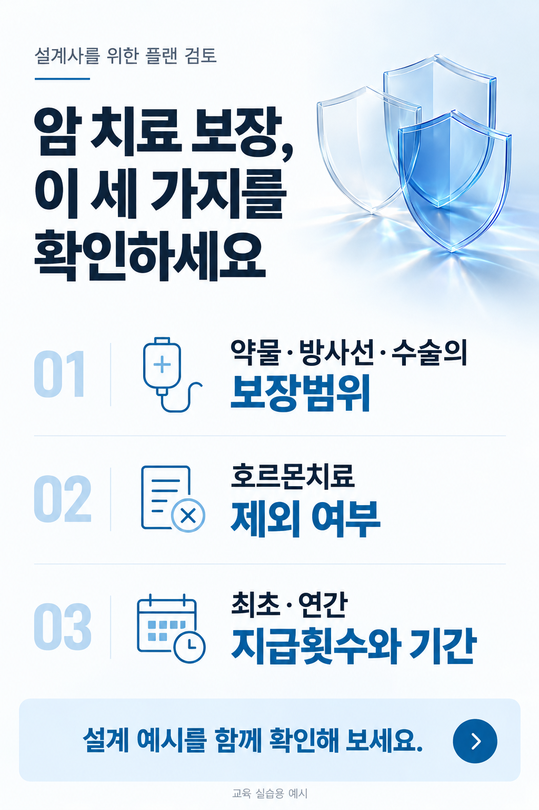
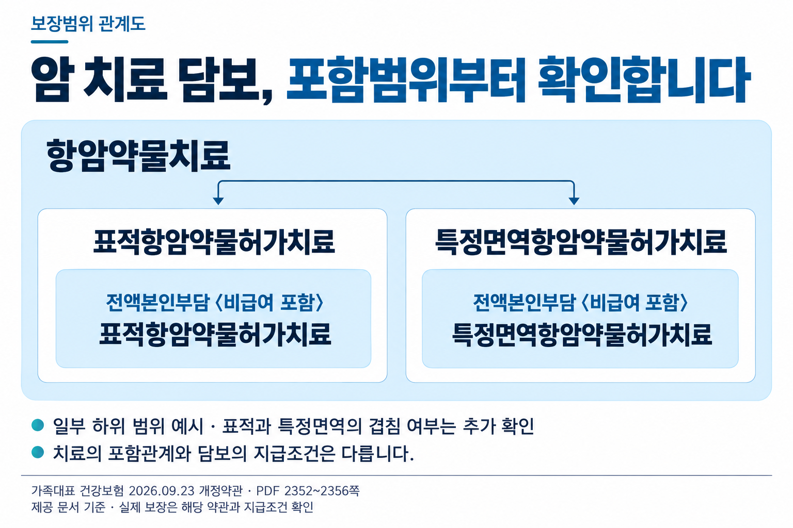
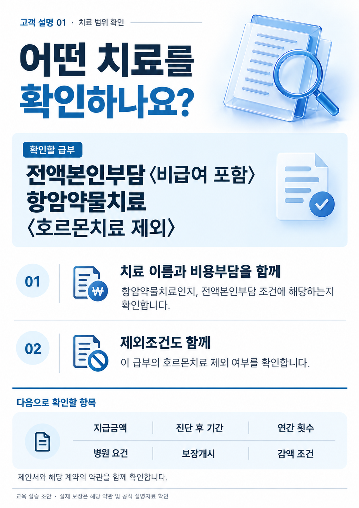

삼성생명 GA서울지역단 · CM·설계매니저 여러분을 위한 교육
설계매니저를 위한
AI 영업자료 실습
위 메뉴에서 선택한 구간만 보입니다. 구간을 마치면 하단의 이전·다음 버튼으로 이어가세요. 수업 후에도 필요한 구간을 다시 열어 따라 할 수 있습니다.
이 교육을 마치면,
설계사에게 이런 자료를 보여줄 수 있습니다.
먼저 결과를 보세요. 아래는 설계매니저가 GA 설계사의 상품 이해와 설계를 지원할 때 쓸 수 있는 실습 프롬프트로 실제 생성한 이미지 예시입니다. 쉽게 만들 수 있는 한 장에서 시작해, 마지막에는 조건을 검토하고 설명하는 패키지로 확장합니다. 예시는 교육 실습 초안이며 회사의 공식 승인 자료가 아닙니다.
설계사에게 보내는 주력플랜 소개 카드
긴 제안서를 보내기 전에, 무엇을 살펴볼 설계인지 한 장으로 안내합니다.

소개 메시지 예시: “암 치료 설계 시 함께 확인할 항목을 정리했습니다. 제안서와 약관을 보며 담보별 차이를 살펴보겠습니다.”
“이 담보가 어디까지 포함하나요?” 보장범위 지도
설계사가 넓은 범위와 좁은 범위를 구분하도록 돕습니다.

설계사에게 설명할 말: “같은 항암약물치료 안에서도 특정 치료나 비용부담 조건으로 범위가 더 좁아집니다. 지급횟수·기간은 담보별로 다시 확인해야 합니다.”
가족대표 건강보험 2026.09.23 개정약관, 프리미엄암직접치료보장특약AC, PDF 2352~2356쪽. 일부 하위 범위를 보여주는 예시이며 전체 목록이 아닙니다. 나란한 두 범위가 서로 겹치지 않는다는 뜻은 아닙니다.
제안서 검토·설명 패키지
담보를 확인하는 표와 설계사 질문, 고객 설명 순서를 함께 준비합니다.

패키지 중 고객 설명 첫 단계의 이미지 예시입니다. 확인표와 질문표는 텍스트로 유지합니다. 금액·기간을 채운 완성본이 아니라 치료 범위와 확인 항목을 보여주는 예시이며, 실제 설계의 담보·금액은 그 제안서와 해당 계약에 맞는 약관으로 채웁니다. 8월 4180 제안서에 새 가족대표 약관을 소급 적용하지 않습니다.
이전 교육에서도 주력플랜 자료와 핵심 교육자료를 만들어 보고 싶다는 의견이 나왔습니다. 이번에는 위 세 가지 결과물을 목표로, 쉬운 제작부터 직접 해보고 마지막 종합 작업을 시연으로 살펴봅니다.
한 구간을 마치면 아래의 이전·다음 버튼이나 상단 메뉴로 이동하세요. 교육 후에도 필요한 구간을 다시 열어 순서대로 실행할 수 있습니다. 각 실습은 ‘요청 → 확인 → 수정’으로 이어집니다. 마지막 종합 작업은 강사 시연이며 처음부터 모두 따라 만들 필요는 없습니다.
준비할 것
- ChatGPT와 Google 계정에 로그인해 주세요. 앱 설치나 로그인이 막히면 현장에서 도움을 받으세요.
- 노트북에서는 ChatGPT와 Gemini Notebook을 엽니다. 휴대전화에서는 각 공식 앱을 사용합니다.
- 실습자료는 아래에서 받거나 강사가 카카오톡으로 전달한 파일을 사용합니다.
휴대전화와 노트북, 어떻게 나눠 쓰나요?
휴대전화: 카카오톡으로 자료를 받고, AI 앱에서 실습하고, 만든 이미지의 글자가 읽히는지 확인합니다.
노트북: 웹교재와 AI를 각각 열어 복사·붙여넣기하고, 파일과 답변을 나란히 봅니다. 브라우저 창 두 개를 나란히 두어도 좋습니다.
한 기기에서 끝까지 해도 됩니다. 두 기기를 매 단계 오갈 필요는 없습니다. 파일을 받았는데 AI에서 찾을 수 없으면, 먼저 그 기기에 저장했는지 확인하세요.
실제 고객의 이름·연락처·계약번호·건강정보가 들어 있는 파일은 사용하지 않습니다. 회사 자료는 AI 입력과 교육 사용이 허용된 범위를 확인합니다. 실습에서 만든 자료는 회사 기준을 확인한 뒤 실제 설명·배포에 활용합니다.
충분히 대화하고,
도구를 활용하고, 반복할 일을 준비합니다.
앞에서 본 결과물은 한 번의 멋진 요청만으로 완성되는 것이 아닙니다. 내 상황을 충분히 이야기하고, 일에 맞는 도구를 활용하고, 반복할 기준을 준비하면 나에게 맞는 결과를 만들고 고치기 쉬워집니다.
무슨 일을 왜 하는지 말합니다.
부족한 맥락은 질문받습니다.
그림은 이미지 생성으로,
시장 조사는 Exa로 살펴봅니다.
지침을 먼저 정하고,
근거로 쓸 자료를 모읍니다.
1. 대화하는 법 · 글로 정리하기 어렵다면 말로 충분히 설명하세요
같은 AI를 써도 답이 달라지는 이유 중 하나는 전달한 목적·상황·판단 기준이 다르기 때문입니다. “자료 만들어줘”, “더 구체적으로”만 반복하기보다 내가 맡은 업무, 지금의 어려움, 가진 자료, 원하는 결과를 충분히 이야기해 보세요. 아직 생각이 정리되지 않아도 괜찮습니다.
| 대화의 기본 규칙 | 이렇게 말합니다 |
|---|---|
| 역할을 정하기 · 페르소나 | “너는 설계매니저의 업무를 돕는 AI 활용 코치야.” |
| 도와줘 | “설계사가 이해하기 쉬운 자료를 만들도록 도와줘.” |
| 질문해줘 | “정보가 부족하면 만들기 전에 나에게 질문해줘.” |
| 길게 말하기 | 누구를 돕는지, 어떤 상황인지, 우려와 원하는 결과를 설명합니다. |
문장의 길이 자체보다 AI가 내 일을 이해할 재료가 중요합니다. 충분히 설명하기 어렵다면 “아직 해결책을 내지 말고 질문부터 해줘”라고 요청하세요.
약 60초 동안 본인의 업무 장면 하나를 말해 보세요. ChatGPT의 음성 입력이나 휴대전화 키보드 마이크를 사용할 수 있습니다. 음성 입력이 안 되면 글로 적습니다. 전송 전에 이름·날짜·숫자가 제대로 입력됐는지 확인하세요.
너는 설계매니저의 업무를 돕는 생성형 AI 활용 코치야. 나는 삼성생명 GA서울지역단에서 [담당 업무]를 하고 있어. 내가 돕는 사람은 [설계사·팀장 등]이고, 지금 [구체적인 업무 장면]에서 어려움을 느껴. 내가 가진 자료는 [자료 또는 없음]이고, 만들고 싶은 결과는 [원하는 자료 또는 아직 미정]이야. 나에게 맞는 활용 방법을 함께 찾도록 도와줘. 지금은 해결책을 서두르지 말고, 내 상황을 이해하기 위해 필요한 질문을 한 번에 하나씩 최대 5개만 해줘. 이미 말한 내용은 다시 묻지 마. 내가 길게 이야기해도 먼저 맥락을 모아줘. 충분히 이해했거나 내가 ‘정리해줘’라고 하면 목적·현재 어려움·필요한 자료·원하는 결과·남은 질문을 정리해줘. 내가 말하지 않은 사실이나 숫자는 만들지 마.
질문에 2~3번 답한 뒤, AI가 정리한 내용이 내 생각과 맞는지 읽고 고칩니다. 실제 고객의 개인정보와 회사 내부 기밀은 빼고 이야기하세요. 여기서 맥락을 쌓는다는 것은 현재 대화에 재료를 모은다는 뜻이며, 다른 대화에도 모두 자동으로 전달된다는 뜻은 아닙니다.
2. 도구를 활용하는 법 · 원하는 일에 필요한 기능을 연결합니다
앞에서 본 카드에는 ChatGPT의 이미지 생성 기능을 사용했습니다. 시장·고객의 변화처럼 외부 정보를 찾아야 할 때는 Exa 같은 외부 플러그인·연결 도구를 활용할 수 있습니다. 오늘은 Exa를 시장 조사 예시로 살펴봅니다.
| 하려는 일 | 활용할 기능 | 내가 확인할 것 |
|---|---|---|
| 안내 카드·설명 이미지 만들기 | 이미지 생성 | 지정한 문구, 글자 크기, 오탈자 |
| 보험시장·고객 관심 변화 조사 | Exa | 원문 제목·발표일·주소, 내 업무와의 관련성 |
- ChatGPT의 플러그인·앱 목록에서 Exa를 검색하고 설명과 사용 가능한 환경을 확인합니다.
- 설치·연결이 필요하면 안내에 따라 사용할 계정과 권한을 확인합니다. 이미 준비돼 있다면 다시 연결하지 않습니다.
- 대화 입력창의 플러그인 메뉴 또는 @ 목록에서 실제 Exa 항목을 선택합니다. 이름만 글로 쓰는 것과 도구를 선택하는 것은 구분합니다.
- 아래 예시로 조사하고, 답변에 나온 원문 링크 하나를 열어 제목·날짜·내용을 확인합니다.
Exa를 사용해 공개 자료를 찾아줘. 나는 GA 설계사의 상품 이해와 영업활동을 지원하는 설계매니저야. 조사 시점 기준 최근 1년의 국내 보험시장 변화 또는 고객의 보장 관심 변화 중 설계사와 이야기할 만한 주제 3개를 찾아줘. 공식 기관·협회·원문 조사자료를 우선하고, 원문 제목·발표 기관·발표일·주소를 함께 적어줘. 각 주제마다 ① 원문에서 확인한 사실 ② 설계사와 이야기할 질문 한 개를 구분해줘. 기관이 밝힌 사실과 너의 해석을 섞지 말고, 원문을 못 읽었다면 확인 범위를 알려줘. 확인하지 않은 보험금·지급조건이나 고객 개인의 상황은 추정하지 마.
Exa가 보이지 않거나 연결이 막히면
본인 계정·기기에 보이는 도구를 기준으로 진행합니다. 강사 시연을 보거나, 일반 웹검색으로 공개 자료 하나를 찾아 제목·날짜·주소와 필요한 내용을 AI에게 전달해 같은 방식으로 정리해 보세요. 연결 때문에 다음 실습을 멈출 필요는 없습니다.
3. 프로젝트로 준비하는 법 · 지침을 먼저 정하고 자료를 넣습니다
같은 일을 반복할 때마다 긴 설명을 처음부터 다시 쓰지 않도록 프로젝트를 활용합니다. 예를 들어 ‘GA 설명자료실’에 일하는 기준과 근거 자료를 모으고, 이번에 만들 자료의 상황을 대화로 더합니다.
| 준비할 것 | 이 과정의 예 |
|---|---|
| 지침 · 어떤 기준으로 일할까? | 설계사의 이해를 돕고, 이미지 전에 문구를 확인하며, 근거 없는 금액·지급조건은 만들지 않기 |
| 소스·자료 · 무엇을 근거로 볼까? | 제공된 실습자료, 사용이 허용된 상품 문서, 검토한 예시 |
| 이번 대화 · 지금 무엇을 할까? | “이번에는 신입 설계사에게 설명할 카드 한 장이 필요해.” |
필요한 도구는 프로젝트의 대화에서 선택해 활용합니다. 지침에 “조사해줘”라고 적는 것만으로 외부 도구가 연결되지는 않습니다. 06 · 프로젝트에서 지침과 자료를 실제로 넣고 새 대화에서 다시 활용해 봅니다. 지금은 세 가지의 관계를 이해하면 됩니다.
반복할 업무를 프로젝트에 모으고, 지침과 자료를 준비합니다. 필요한 도구를 활용하면서 내 상황을 충분히 이야기하고, 결과를 확인하며 고칩니다.
사용 참고: OpenAI 이미지 생성 안내 · 플러그인 안내 · 프로젝트 안내. 계정·기기에 따라 제공되는 도구와 메뉴가 다릅니다.
설계사가 읽고 싶은
주력플랜 소개 카드 한 장을 만듭니다.
직접 실습 · ChatGPT
먼저 설계사에게 어떤 설계 검토를 제안할지 짧게 알립니다. 첫 실습에서는 금액이나 우월성을 내세우기보다, 함께 확인할 항목을 소개하는 카드로 시작합니다. 이후 승인된 주력플랜 자료에서 확인한 문구로 바꿔 활용합니다.
새 대화에서 요청합니다
ChatGPT를 열어 새 대화를 시작하세요. 아래 요청을 복사하여 보내면 됩니다. 이미지 메뉴를 찾기 어려우면 ‘이미지를 만들어 주세요’라고 직접 요청하세요.
담당 GA 설계사에게 카카오톡으로 보낼 세로형 안내 카드 이미지를 만들어 주세요. 아래 글자만 사용해 주세요. 제목: 암 치료 보장, 이 세 가지를 확인하세요 본문: ① 약물·방사선·수술의 보장범위 ② 호르몬치료 제외 여부 ③ 최초·연간 지급횟수와 기간 안내: 설계 예시를 함께 확인해 보세요. 하단: 교육 실습용 예시 디자인: 2:3 세로형, 흰색·연파랑·짙은 남색의 차분한 금융 편집 디자인. 상단에는 제목을 3줄 이내로 배치하고, 오른쪽에 투명한 파란 방패 일러스트를 작게 넣어 주세요. 중앙의 세 항목은 01·02·03 번호와 간결한 아이콘으로 구분하고 얇은 선과 여백으로 나눠 주세요. 안내 문구는 하단 연파랑 띠에, 교육 실습용 표시는 맨 아래에 둡니다. 테두리 여백은 충분히 두고 제목 → 확인 항목 → 안내 순으로 읽히게 해주세요. 모든 글자를 굵게 만들거나 둥근 상자를 반복하지 마세요. 휴대전화에서도 확인 항목이 읽히도록 하고 로고·금액·새로운 홍보 문구는 추가하지 마세요. 지정한 한글 문구와 띄어쓰기를 정확히 유지해 주세요.
내용을 먼저 확인하고 한 가지만 고칩니다
제목·확인 항목·안내 문구가 맞는지 확인하세요. 이미지가 예뻐도 글자가 틀리거나 작으면 수정합니다. 글자를 지정해도 오탈자가 생길 수 있습니다.
제목과 세 가지 확인 항목을 더 크게 해주세요. 기존 문구는 그대로 유지하고, 배경 장식만 줄여 주세요. 글자가 잘리거나 틀린 부분이 없는지도 확인해 주세요.
방금 사용한 프롬프트는 이렇게 구성됩니다
프롬프트는 AI에게 보내는 요청문입니다. 방금 복사한 요청도 아래 네 가지를 정해서 쓴 것입니다.
| 정할 것 | 이번 실습의 예 |
|---|---|
| 누구에게, 무엇을 위해 | GA 설계사에게 확인 항목 안내 |
| 어떤 결과물로 | 카카오톡용 세로 카드 한 장 |
| 어떤 내용을 담아 | 제목·본문·하단 문구 지정 |
| 어떻게 보이게 | 흰색·연파랑, 큰 글자, 간단한 구성 |
다른 자료를 만들 때도 이 네 가지를 정해서 요청하면 됩니다. 처음부터 완벽하게 쓰지 않아도, 결과를 보고 하나씩 고치면 됩니다. 위 요청의 긴 디자인 설명은 네 번째인 ‘어떻게 보이게’를 구체적으로 정한 부분입니다.
이제 내 업무에 맞게 네 부분을 바꿔보세요
아래 빈칸을 바꾸면 내 요청문이 됩니다. ‘내용’에는 이미지에 넣을 실제 제목과 본문을 적으세요. 처음에는 첫 실습과 비슷한 짧은 안내 카드부터 시작해 보세요.
나는 [누구]에게 [목적]으로 보여줄 자료가 필요합니다. [형태]의 이미지로 만들어 주세요. 아래 내용을 담아 주세요. [제목·본문·하단 문구를 여기에 적으세요.] 디자인은 [색상·분위기·글자 크기]로 해주세요. 제공한 문구는 유지하고, 자료에 없는 금액이나 보장 내용은 추가하지 마세요.
저장하고 전달 문구를 붙입니다
휴대전화: 이미지를 눌러 다운로드·저장 메뉴를 찾고 사진 앱 또는 파일 앱에서 다시 엽니다. 노트북: 이미지의 다운로드 버튼으로 저장하고 파일을 다시 엽니다. 카카오톡 전송은 실제 배포 전 검토가 끝난 뒤 진행하세요.
이 안내 카드와 함께 설계사에게 보낼 카카오톡 문구를 두 문장으로 써주세요. 함께 확인할 항목과 설계 검토 제안을 간단히 안내하고, 과장 없이 정중한 말투로 작성해 주세요. 자료에 없는 장소나 신청 방법은 추가하지 마세요.
이미지가 만들어지지 않거나 한도에 걸리면
이미지 생성 가능 여부와 사용 한도는 계정에 따라 다릅니다. 문구와 수정 요청을 먼저 완성하고, 강사 예제 또는 옆자리 결과와 비교해 보세요. 반복 요청으로 횟수를 소진하지 말고 무엇을 수정할지 먼저 정합니다.
이 담보가 어디까지 보장하는지,
포함·제외 관계로 설명합니다.
직접 실습 · ChatGPT
설계사는 고객의 필요에 맞는 담보를 선택해야 합니다. 설계매니저는 넓은 담보가 어디까지 포함하는지, 특정 담보가 무엇을 별도로 정하는지를 설명할 수 있어야 합니다. 이번에는 2026년 9월 23일 개정 가족대표 건강보험 약관의 정의를 근거로, 설계사를 위한 포함·제외 관계도를 만듭니다. 쪽수는 PDF 뷰어 기준입니다.
| 상위 범위 → 하위 범위 | 근거 PDF 쪽 | 함께 확인할 조건 |
|---|---|---|
| 항암약물치료 → 표적항암약물허가치료 | 2352~2353 | 프리미엄암직접치료 특약의 허가 범위 확인. 호르몬 관련 약제는 표적 정의에서 제외 |
| 항암약물치료 → 특정면역항암약물허가치료 | 2354 | 면역관문억제제·ADC·CAR-T를 열거. 모든 면역치료라는 뜻은 아님 |
| 표적·특정면역 허가치료 → 각각의 전액본인부담〈비급여 포함〉 치료 | 2355~2356 | 더 좁은 비용부담 조건. 급여여도 환자 100% 부담이면 포함될 수 있음 |
| 항암약물치료 → 호르몬치료 | 1175~1176 | 암통합보장 특약에서 하위 범위로 정의한 뒤 해당 약물 급부에서는 제외 |
| 항암방사선치료 → 세기조절·양성자·정위적 방사선치료 | 2356 | 세기조절은 입자방사선치료 제외. 양성자를 세기조절 안에 넣지 않기 |
| 항암방사선치료 → 중입자치료 | 2550 | 중입자 정의에서 양성자 제외. 양성자가 중입자에 포함되는 것으로 그리지 않기 |
상위 치료에 속한다는 이유만으로 여러 담보에서 모두 지급되거나 한 담보가 다른 담보를 대신하는 것은 아닙니다. 질병 정의·허가 범위·횟수·기간을 함께 봅니다. 표적과 특정면역은 서로 겹치지 않는 두 집합으로 단정하지 않습니다. 위 관계는 명시한 상품·특약 기준이며 다른 특약에 자동 적용하지 않습니다.
공통 파일을 첨부하고 비교표를 받습니다
새 대화에서 파일 첨부(＋ 또는 클립)를 눌러 ‘보장범위_최신약관_실습자료.txt’를 선택하세요. 초보 실습은 짧은 자료로 시작합니다. 원문 대조 시 아래 공식 약관 PDF와 안내된 쪽수를 사용합니다.
나는 보험설계사의 담보 선택과 설계를 돕는 설계매니저입니다. 첨부 자료를 근거로 ‘무엇이 무엇에 포함되고 무엇은 제외되는지’를 정리해 주세요. 치료 용어의 작용 원리나 장단점을 설명하는 과제가 아닙니다. 상위 개념 / 하위 개념 / 포함·제외·확인 불가 / 근거 문장·쪽수 / 담보 선택 때 함께 확인할 조건으로 나눠 주세요. 치료 정의의 포함관계와 실제 담보의 지급 조건은 구분해 주세요. 근거 없는 포함관계와 중복 지급 여부, 담보 대체 가능성을 추정하지 마세요. 다른 상품에도 같은 관계가 적용된다고 일반화하지 마세요. 먼저 관계표만 보여주고 아직 이미지는 만들지 마세요.
확인한 문구로 이미지 한 장을 만듭니다
첨부 파일과 비교해 의미가 바뀌지 않았는지 확인하세요. 한 장에 글자가 너무 많으면 항목을 두 개로 줄입니다.
위에서 확인한 문구로 가로형 설명 이미지 한 장을 만들어 주세요. 제목은 ‘암 치료 담보, 포함범위부터 확인합니다’로 해주세요. 설계매니저가 설계사에게 보여줄 포함·제외 관계도로 구성해 주세요. 확인된 상하 관계만 큰 상자와 작은 상자 또는 화살표로 표현해 주세요. 관계가 불명확한 항목은 별도로 두고 ‘추가 확인’이라고 표시해 주세요. 치료의 하위 범위라는 사실과 담보 지급이 가능하다는 판단을 섞지 마세요. 디자인: 3:2 가로형, 흰색·연파랑·짙은 남색의 정돈된 정보 디자인. 상단 제목 아래, 넓은 연파랑 영역에 ‘항암약물치료’를 표시합니다. 그 안에 표적항암약물허가치료와 특정면역항암약물허가치료 패널을 나란히 놓고, 각 패널 안에 해당 전액본인부담〈비급여 포함〉 치료를 더 작은 영역으로 넣어 주세요. 같은 크기의 상자만 화살표로 잇지 말고, 안에 들어가는 구조로 상하 범위를 보여주세요. 두 범위가 서로 겹치지 않는다거나 전체 하위 범위를 다 보여준다는 뜻으로 그리지 마세요. 아래에 ‘일부 하위 범위 예시 · 표적과 특정면역의 겹침 여부는 추가 확인’과 ‘치료의 포함관계와 담보의 지급조건은 다릅니다.’를 읽기 쉽게 표시해 주세요. 여백과 얇은 선으로 구분하고 긴 치료명은 의미 단위로 줄바꿈해 주세요. 출처는 ‘가족대표 건강보험 2026.09.23 개정약관 · PDF 2352~2356쪽’입니다. 새로운 정보나 로고를 추가하지 마세요. 하단에는 ‘제공 문서 기준 · 실제 보장은 해당 약관과 지급조건 확인’이라고 적어주세요.
출력해서 넘기며 설명하고 싶다면
이미지 한 장에 핵심 하나만 남기고, 같은 형식으로 다음 주제를 만들면 됩니다. 출력 전 A4 한 장으로 시험해 글자와 각주를 확인하세요. 금액과 조건이 많은 자료는 한 장에 무리하게 압축하지 않습니다.
답변을 읽고,
근거가 있는 자리까지 찾아갑니다.
직접 실습 · Gemini Notebook
자료에 질문하고 인용을 통해 원문을 확인합니다. 자료가 들어 있어도 잘못 읽거나 빠뜨릴 수 있으므로, 인용 표시가 있다는 것과 답변이 정확하다는 것은 구분해서 확인합니다.
노트북 하나에 공통 자료를 넣습니다
Gemini Notebook(구 NotebookLM)을 열고 새 노트북을 만듭니다. 이름은 암 치료 담보 범위 확인으로 정하고, ‘소스 추가’에서 공통 실습자료 파일을 올립니다. 처리 후 파일을 선택해 내용이 보이는지 확인하세요.
모바일 / 노트북에서 따라 하기
모바일: 앱에서 새 노트북과 소스 추가를 찾습니다. 파일 목록에 자료가 없다면 카카오톡 또는 교재에서 먼저 기기에 저장하세요.
노트북: notebook.google.com에서 새 노트북을 만들고 파일을 업로드합니다. 소스와 채팅을 함께 보며 확인합니다.
앱에서 필요한 파일 형식이나 메뉴를 찾을 수 없다면 모바일 브라우저에서 웹사이트를 열어 시도하거나, 강사가 제공한 본문을 텍스트 소스로 붙여넣으세요. 버튼 이름과 제공 기능은 기기·계정에 따라 다를 수 있습니다.
자료에 있는 질문을 해봅니다
이 노트북에 올린 자료를 근거로 답해 주세요. 설계사가 ‘항암약물치료의 하위 범위에 표적항암약물허가치료와 특정면역항암약물허가치료가 들어가나요? 호르몬치료 제외는 어떤 급부의 조건인가요?’라고 물었습니다. 포함·제외 관계와 그 적용 범위를 나누고 근거 인용을 함께 보여주세요. 자료에 없는 내용은 추가하지 말고 확인되지 않는다고 알려주세요.
답변의 인용을 눌러 실제 소스에서 해당 문장을 찾으세요. AI가 원문의 뜻을 넓히거나 중요한 조건을 빠뜨리지 않았는지 비교합니다.
자료에 없는 질문도 해봅니다
이 자료만 보고 삼성생명 특정 상품의 중입자치료 보험금이 얼마인지 확정할 수 있나요? 답변에 필요한 정보가 자료에 있는지부터 확인해 주세요. 없다면 추정하지 말고 어떤 공식 문서를 추가로 확인해야 하는지 알려주세요.
이번 자료에는 상품별 지급금액이 없습니다. 금액이 나온다면 근거를 다시 찾으세요. 답을 못하는 부분을 구분하는 것도 이 도구를 쓰는 중요한 이유입니다.
매번 설명하던 맥락을
프로젝트에 모아둡니다.
직접 실습 · ChatGPT 프로젝트
프로젝트는 관련 파일·지침·대화를 모아 작업을 이어가는 공간입니다. 오늘 만든 것과 같은 자료를 다음 주에도 만들고 싶을 때 사용합니다. 답변이 자동으로 정확해지는 기능은 아닙니다.
프로젝트를 하나 만듭니다
ChatGPT의 메뉴에서 ‘프로젝트’ 또는 ‘새 프로젝트’를 찾아 GA 설명자료실을 만드세요. 노트북은 왼쪽 메뉴, 모바일은 메뉴를 펼쳐 확인합니다. 찾기 어려우면 일반 대화에서 먼저 해보고 교육 후 다시 정리해도 됩니다.
반복해서 지킬 지침을 넣습니다
프로젝트의 설정·메뉴에서 ‘프로젝트 지침’을 찾아 아래 내용을 넣습니다. 지침은 새 대화의 첫 요청문과 구분해 저장합니다.
나는 GA 설계사와 팀장의 영업·교육·자료 준비를 지원합니다. 업로드한 자료를 우선 사용해 이해하기 쉬운 설명자료를 만들어 주세요. 1. 누구에게 어떤 상황에서 쓸지 불분명하면 먼저 확인합니다. 2. 이미지 전에 설명 문구를 먼저 제시합니다. 3. 의학적 치료 설명과 보험상품의 보장 정의를 구분합니다. 4. 금액·기간·횟수·제외조건은 근거 파일과 위치를 확인합니다. 5. 자료에 없는 내용은 추정하지 말고 ‘확인 필요’라고 적습니다. 6. 공식 자료의 승인번호·로고를 새 결과물의 승인 표시로 옮기지 않습니다.
근거로 사용할 자료를 넣습니다
프로젝트의 소스·파일 추가에서 공통 보장범위_최신약관_실습자료.txt를 넣습니다. 파일을 열어 내용이 보이는지 확인하세요. 지침이 일하는 기준이라면, 자료는 그 기준으로 확인할 근거입니다. 지침도 다시 열어 저장된 내용을 확인합니다.
대상을 바꿔 한 번 더 요청합니다
프로젝트에 올린 자료로 ‘암 치료 담보의 포함·제외 범위’를 설명하려고 합니다. 이번 대상은 상품을 처음 접하는 신입 설계사입니다. 설계사가 담보를 선택할 때 참고할 한 장의 관계표 원고를 작성해 주세요. 이미지는 아직 만들지 말고, 근거와 확인할 점을 먼저 보여주세요.
Notebook에서 확인한 내용을 ChatGPT에 쓸 때는 검토한 짧은 원고를 직접 복사하고 출처를 함께 남깁니다. 공유·연결 설정을 추가하지 않아도 됩니다.
제안서 한 부를
검토·설명 패키지로 바꿉니다.
강사 시연 · 제안서 PDF → 확인표 → 상담자료
이제 여러 조건이 얽힌 실제 문서로 확장합니다. 강사가 교육 사용 범위를 확인한 제안서로 시연합니다. 처음에는 화면을 보며 어떤 내용을 남기고 무엇을 확인하는지 살펴보세요. 아래 요청은 교육 후 다시 해볼 때 활용할 수 있습니다.
① 급부 하나만 고르기 → ② 관련 페이지와 용어 정의 함께 읽기 → ③ 조건을 남긴 원고 확인 → ④ 상담 보조자료로 구성하기
고객 설명 첫 단계에서 치료 범위와 확인할 조건을 보여주는 예시입니다. 금액·기간을 채우려면 해당 제안서와 약관을 먼저 대조합니다.
1. Gemini Notebook에서 먼저 조건을 찾습니다
강사 예제는 2026년 8월 발행된 제안용 상품설명서입니다. 앞 실습의 가족대표 약관은 다른 상품이므로 이 제안서에 소급 적용하지 않습니다. 지급 판단을 하려면 이 설계에 맞는 당시 약관을 추가로 대조해야 합니다. 현재 판매 조건을 안내하는 자료로 일반화하지 않습니다. 8~9쪽의 ‘전액본인부담(비급여포함) 항암약물치료(호르몬치료 제외)’ 급부와 관련 정의·유의사항을 함께 확인합니다.
업로드한 제안서에서 다음 급부 하나만 확인해 주세요. ‘초기집중보장형’ 특약의 ‘전액본인부담(비급여포함) 항암약물치료(호르몬치료 제외)’입니다. 대상 치료 / 지급금액 / 진단 후 기간 / 연간 횟수 / 병원 요건 / 보장개시·감액 / 제외사항 / 근거 페이지로 나눠 정리해 주세요. 표가 다음 페이지로 이어지면 함께 읽고, 관련 용어 정의도 확인해 주세요. 불명확한 부분은 ‘확인 필요’로 표시해 주세요. 다른 급부의 금액을 합산하거나 지급 가능 여부를 확정하지 마세요.
| 원문에서 확인할 항목 | 설명자료에서 놓치기 쉬운 부분 |
|---|---|
| 연차별 지급 구조 | 1~3차년도, 4~5차년도, 6~10차년도를 하나의 금액으로 바꾸지 않기 |
| 횟수·기간 | 매 치료마다 지급되는 것으로 오해하지 않게 표현 |
| 병원·치료 조건 | 해당 급부의 병원 범위와 전액본인부담 정의 유지 |
| 호르몬치료 제외 | 이 급부에서의 제외를 ‘암 치료가 아니다’로 바꾸지 않기 |
| 보장개시·감액 | 큰 금액만 보여주며 조건을 생략하지 않기 |
2. 원문을 대조한 뒤 ChatGPT에서 설명 원고를 만듭니다
아래 요청 마지막에 직접 검토한 조건표를 붙입니다. 다른 상품의 홍보 이미지나 다른 설계의 보험료를 섞지 않습니다. 금액을 하나씩 확인하고, 추가 약관이 필요하면 먼저 확인합니다.
아래는 제안서 원문과 대조한 조건표입니다. 담당 GA 설계사·팀장에게 이 급부를 설명할 세 가지 자료의 원고를 만들어 주세요. 자료 1: 담보의 범위·지급조건·근거 위치 확인표. 자료 2: 설계사가 설계 전 확인할 질문 5개. 자료 3: 고객에게 설명할 순서 3단계와 단계별 한 문장. 제목과 핵심 문장은 짧게 쓰되 금액·기간·횟수·제외조건은 바꾸지 마세요. 한 장에 담기 어려우면 조건을 지우지 말고 설명 범위를 줄여 주세요. ‘무조건 지급’, ‘모든 치료 보장’처럼 단정하지 마세요. 공식 상품설명서를 대신하지 않는 교육 실습 초안으로 작성해 주세요. 아직 이미지는 만들지 마세요. [이 아래에 원문 대조가 끝난 조건표를 붙이세요.]
3. 패키지에서 설명 카드 한 장을 골라 시각화합니다
방금 확인한 패키지의 고객 설명 순서에서 첫 단계만 골라 A4 세로형 상담 보조 이미지 한 장을 만들어 주세요. 나머지 확인표와 질문표는 텍스트로 유지해 주세요. 디자인: A4 세로 비율, 흰색·연파랑·짙은 남색의 차분한 상담 안내 디자인. 상단에 ‘고객 설명 01 · 치료 범위 확인’, 큰 제목 ‘어떤 치료를 확인하나요?’를 둡니다. 오른쪽에 투명한 파란 문서·돋보기 일러스트를 작게 넣고 글자와 겹치지 않게 해주세요. 그 아래 연파랑 영역에 급부명을 넣고 ‘호르몬치료 제외’를 같은 영역에 분명히 표시합니다. 중앙은 01 ‘치료 이름과 비용부담을 함께’, 02 ‘제외조건도 함께’로 나누고, 원문 대조가 끝난 문장만 붙여 주세요. 두 항목은 얇은 선과 넉넉한 여백으로 구분합니다. 하단은 ‘다음으로 확인할 항목’ 아래 지급금액·진단 후 기간·연간 횟수, 병원 요건·보장개시·감액 조건을 두 줄로 정돈합니다. 예시처럼 조건이 아직 확인되지 않았으면 숫자를 채우지 말고 확인 항목으로 남겨 주세요. 테두리 여백을 확보하고 제목 → 급부명·제외 → 확인 순서가 읽히게 해주세요. 모든 글자를 굵게 하거나 장식·둥근 상자를 반복하지 말고 지정한 한글을 정확히 유지해 주세요. 금액과 기간은 같은 위치에서 비교할 수 있게 하고 조건을 누락하지 마세요. 회사 로고·준법감시필 번호·확인되지 않은 홍보 문구는 넣지 마세요. 하단에 ‘교육 실습 초안 · 실제 보장은 해당 약관 및 공식 설명자료 확인’이라고 적어주세요.
한글·숫자·단위·기간·횟수·병원 요건·제외사항을 원문과 다시 비교합니다. 오류가 있으면 수정하고, 이미지에서 정확히 고쳐지지 않으면 그 자료는 사용하지 않습니다. ‘학습용’ 표시는 회사의 사용 승인·심의를 대신하지 않습니다.
시연을 보고 기억할 질문
왜 제안서 전체를 한 번에 요약하지 않았을까요? 왜 먼저 확인표를 만들었을까요? 조건이 길어질 때 글자를 줄일지, 주제를 좁힐지 생각해 보세요. 중요한 것은 보기 좋은 이미지와 정확한 설명을 함께 만드는 일입니다.
다음에 설명할 대상과
바꿀 내용 하나를 정합니다.
새로운 상품을 모두 넣기 전에 오늘 만든 카드나 비교자료에서 한 가지부터 바꿔 보세요. 누구에게 언제 쓸 것인지가 정해지면 다음 요청도 구체적이 됩니다.
개념의 근거와
상품의 근거를 구분합니다.
공식 약관 PDF 다운로드
삼성생명 공시에서 확인한 2026년 9월 23일 개정·현행 판매분입니다. 모든 채널의 신상품 출시를 빠짐없이 비교했다는 뜻은 아닙니다. 같은 ‘암 치료’ 표현이라도 상품·특약별 정의를 따로 확인하세요.
① 삼성 가족대표 건강보험(2607) 약관
범위 지도 실습의 기준 · 무배당·무해약환급금형 · 2,694쪽 · 약 53.9 MB
빠르게 찾기: 암통합보장 특약 PDF 1175~1178쪽 / 프리미엄암직접치료 특약 2352~2359쪽 / 중입자 특약 2550~2551쪽. PDF 쪽수와 종이에 인쇄된 쪽수는 다릅니다.
② 삼성인터넷암치료보험(2501) 약관
별도 상품 비교·확인용 · 갱신형·무배당 · 316쪽 · 약 7.3 MB
가족대표 건강보험과 다른 상품입니다. 이 약관의 조건을 가족대표나 4180 제안서의 지급조건으로 옮기지 않습니다.
큰 파일을 처음부터 모두 읽을 필요는 없습니다. 첫 실습은 보장범위 실습자료로 시작하고, 표시된 PDF 쪽수의 원문을 대조합니다. 내려받은 파일은 기기 파일 앱이나 다운로드 폴더에서 다시 열 수 있습니다. 현행 판매 여부는 삼성생명 상품공시에서 확인합니다.
암 치료 기본 개념
- 국가암정보센터: 항암화학요법의 이해, 표적치료제, 면역관문억제제
- 국가암정보센터: 방사선치료, 유방암 치료·호르몬요법
기본 개념 확인일은 2026년 10월 30일입니다. 의료진이 환자별 치료를 결정하며, 이 교재는 약제별 최신 허가·급여·치료비를 안내하지 않습니다.
상품 보장과 자료 사용
상품별 보장은 해당 설계의 제안서와 최신 약관·공식 설명자료를 확인합니다. 제안서는 약관 전체가 아닙니다. 강사 시연 예제는 ‘삼성 4180 인생대표 건강보험(2607)’의 2026년 8월 발행 제안용 상품설명서이며, 최신 판매 조건과 동일하다고 가정하지 않습니다. 원본 파일은 이 웹교재에 배포용으로 포함하지 않았습니다.
금융위원회 금융광고규제 안내와 회사의 현행 자료 사용 기준을 참고하세요. 교육 초안의 완성과 고객에게 사용할 수 있는 자료의 승인은 구분합니다.
도구 사용 참고
계정·기기·업데이트에 따라 메뉴와 사용 한도가 다릅니다. 이 초안의 실제 계정 실습 경로와 시연 시간은 강의 전 다시 확인합니다. 교재의 복사·체크·메모 동작과 AI 서비스의 실제 결과 생성은 별도로 확인해야 합니다.